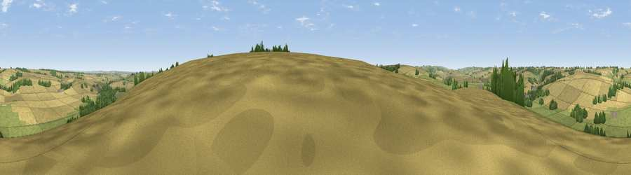

Viewpoint near Broad Chalke
#26013 in England · top 36% of its area beats it · near Broad ChalkeThe view, rendered

A 360° render of this exact spot computed from the terrain model, tree cover and land cover — summer colours, afternoon light, calibrated against photographs of famous viewpoints. Real trees, hedges and buildings will differ in detail.
The panorama
Grey silhouette: terrain skyline in each direction (720 bearings, Earth curvature and refraction included). Dashed green: skyline with trees (+15 m) and buildings (+8 m) as obstacles. Blue strip: how far the ground is visible on each bearing.
Where the view opens
Wedge length = distance to the farthest visible ground on that bearing (vegetation-aware). Rings at 10, 25 and 50 km.
What fills the view
53% cropland · 37% grassland · 9% woodland ·
Angular shares of the visible panorama (visual magnitude), not map area. Landscape diversity 0.41 (0–1 Shannon).
Key numbers
More beautiful places nearby
The staircase of upgrades: each row has a higher view potential than everything closer. Driving times are estimates from straight-line distance, calibrated against real road routing — check an actual route before setting out.
| Place | Direction | Drive | Score |
|---|---|---|---|
| Knowle Hill | SW · 2 km | ~6 min | 57.1 |
| Marleycombe Hill | SW · 4 km | ~9 min | 63.3 |
| Viewpoint near Martin | S · 8 km | ~15 min | 64.6 |
| Viewpoint near Cranborne | S · 8 km | ~17 min | 65.0 |
| Trow Down | WSW · 9 km | ~17 min | 67.5 |
| Monk's Down | WSW · 12 km | ~23 min | 74.4 |
| Viewpoint near Berwick St John | WSW · 13 km | ~24 min | 78.2 |
| Viewpoint near Studland | S · 43 km | ~63 min | 80.9 |
51.02277, -1.92688 · source: screening · position refined by local search. Computed location — check access rights before visiting.